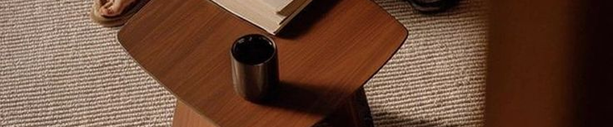

THE BEGINNING OF LOAMO
LOAMO는 바쁜 일상 속에서 잠시 멈추는 순간을 위해 시작되었습니다.
손에 닿는 도자기의 질감과 조용한 형태를 통해
일상의 순간을 더 깊게 느낄 수 있는 오브제를 만듭니다.
OBJECTS FOR QUIET MOMENTS
조용한 오후의 차 한 잔처럼
LOAMO의 오브제는 일상의 순간을
편안하고 따뜻한 분위기로 채웁니다.

Slow Objets
For Every Moments
LOAMO는 빠르게 지나가는 하루 속에서 잠시 멈추는 작은 순간을 위해 일상에 자연스럽게 어울리는 오브제를 만듭니다.
LOAMO의 오브제는 바쁜 하루 속에서 잠시 멈추는 순간을 위해 만들어집니다.따뜻한 차를 따르는 시간, 조용한 식탁 위의 장면처럼 평범한 하루의 작은 순간들이 조금 더 깊게 느껴지도록 합니다. 우리는 일상의 풍경 속에 자연스럽게 어울리는 물건을 만듭니다.
LOAMO의 오브제는 바쁜 하루 속에서 잠시 멈추는 순간을 위해 만들어집니다.따뜻한 차를 따르는 시간, 조용한 식탁 위의 장면처럼 평범한 하루의 작은 순간들이 조금 더 깊게 느껴지도록 합니다. 우리는 일상의 풍경 속에 자연스럽게 어울리는 물건을 만듭니다.
특별한 날을 위한 물건이 아니라 매일 반복되는 일상을 위한 물건을 만들고 싶었습니다. 차 한 잔의 시간, 식탁 위의 작은 풍경처럼 LOAMO는 평범한 순간을 따뜻하게 채우는 오브제입니다.